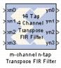

|
|
The Xilinx m-channel n-tap Transpose FIR Filter uses a fully parallel architecture with Time Division Multiplexing. The Virtex FPGA family (and Virtex family derivatives) provide dedicated shift register circuitry called the SRL16E, which are exploited in the architecture to achieve optimal implementation of the multichannel architecture. The Time Division Multiplexer and Time Division Demux can be selected to be implemented or not. Embedded Multipliers are used for the multipliers.As the number of coefficients changes so to does the structure underneath as it is a dynamically built model.Implementation details are provided in the filter design subsystems. To read the annotations, place the block in a model, then right-click on the block and select Explore from the popup menu. Double click on one of the sub-blocks to open the sub-block model and read the annotations.